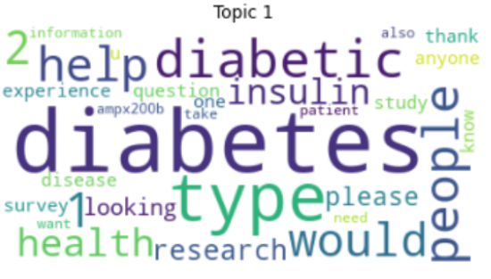

Reddit Community Analysis
Text Analysis
In this part, we did Topic Modeling on the Reddit data set, which contains the submissions in subreddit “Diabetes” in the past three years. We used the LDA Algorithm to find prevalent topics in this diabetes patient community to find out what the patients are concerned about. Here are the Topic Word distributions and visualizations in the form of Word Cloud(set K=4):

Topic 3 and Topic 1 seem very similar. After people get diagnosed with diabetes, they will go to Online communities like Reddit for help, including consulting other patients and sharing experience and emotions. However, they have slightly different focuses. Topic 1 focuses more on the information of diabetes, while Topic 3 pays more attention to the experience of diabetes. This indicates that Topic 1 is more for people to seek help and learn more information about diabetes, and Topic 3 is more for people to share their own experience of diabetes.

In Topic2, people are talking about keeping a diet and reducing the sugar intake. “carbs”, “sugar”, and “glucose” are similar to each other. It shows that the model we have has a strong relation to diabetes since the word cloud tells that people care what they put in their body, especially sugar, which is a great contributor to diabetes. Also, blood and glucose are closed indicators for diabetes.
In Topic4, the documents are associated with sensor, dexcom and insurance. DexCom, Inc. is a company that develops, manufactures, and distributes continuous glucose monitoring (CGM) systems for diabetes management. Cgm is also prevalent in this topic, which proves the significance of our Model. “Sensor”, “dexcom”, “cgm” here refer to the sensor systems for diabetes patients to control their body.
Network Analysis
Our previous collected file: ‘reddit_comments.csv’ contains 232624 posts, we chose the first 500 posts to conduct the network analysis.For the above visualization, posts appear in blue and sized according to their respective number of connections, the labels are the corresponding post ids and are only for posts. Influencers appear small and grey, and people who have more conenctions are highlighted in color. With the network loaded in, we calculated the betweenness centrality and shows the 10 individuals with the highest value:

High betweeness centrialities suggest that theses individuals were important information brokers in the diabetes sub, as betweeness centrality is based on the assumption that the greater the number of shortest paths pass through a node, the more it acts as a broker.
We also looked at the eivenvector centrality, which captures the highly-connected hubs in this network. The top 10 result is shown as below:
Some of these individuals also appeared in the previous section, including the most central user ‘q80hs1’.However, some of the individuals with hight engivenctor centrality don’t have particularly high betweeness centrality, such as user ‘4thshift’. High eigenvector centrality score only indicate individuals create any paths between others, but not necessarily the shortest path. To investigate whether a node’s neighbors tend to be connected to each other, we calculated and sorted the transitivity. The result of such relationships is measured by triangles. But the triangle scores are all 0, meaning that there are hardly any connections in the neighborhood. Clustering is measured via the local clustering coefficient, which is defined as the fraction of all pairs of a node’s neighbors that have an edge between them. The local clustering coefficient is also 0, which again indicates that the users are not well-connected.
The global clustering coefficient is 0, which confirms that the level of clustering or transitivity of this network it low. The density of this network is 0.00847, which shows that this network is considered sparse.
We then find the averaging connectivity over all nodes, which is 1.035680751173709. The result suggests that this network can be divided into disconnected parts by the removal of a single node. Overall the connectivity of this network is low.
The analysis suggests that diabetes sub users don’t have many connections with each other, this could be due to the nature of the reddit platform, as it functioned as a go-to place and people tend to leave comments without too many concerns as the other users are all strangers. Take diabetes subreddit as an example, this is still a relatively sparse network, but people can get useful information as they communicate about how to use blood sugar monitoring devices, and also talk about their feelings and experience. Medical information is relatively private and sensitive information, sometimes people choose not to discuss it with their families, but instead interact with peers online. For many people, such a forum provides comfortable emotional distance and perceived support [1]. The disease itself is a burden and sharing information and feelings with peers may help patients feel relieved without compounding the issue on others. This might be one explanation as to why this social network is sparse but still is very helpful for patients. As our visualization suggests, people tend to interact with others more depending on the content of the post, and less depending on if they know the person or not. The average degree of the network is 2.4, which is relatively low. It is logical to assume the community is formed based on the discussion under similar topics, instead of people’s familiarity with each other.